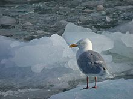
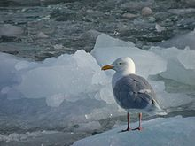

| Glaucous Gull | |
|---|---|
|  | |
| Conservation status | |
| Binomial name | |
| Larus hyperboreus Gunnerus, 1767 |
| Glaucous Gull | |
|---|---|
|  | |
| Conservation status | |
| Binomial name | |
| Larus hyperboreus Gunnerus, 1767 |
The Glaucous Gull (Larus hyperboreus) is a large gull which breeds in the Arctic regions of the northern hemisphere and the Atlantic coasts of Europe. It is migratory, wintering from in the North Atlantic and North Pacific oceans as far south as the British Isles and northernmost states of the USA, also on the Great Lakes. A few birds sometimes reach the southern USA and northern Mexico.
This species breeds colonially or singly on coasts and cliffs, making a lined nest on the ground or cliff. Normally, 2–4 light brown eggs with dark chocolate splotches are laid.
This is a large and powerful gull, very pale in all plumages, with no black in the wings or tail. The term glaucous describes its colouration. Adults are pale grey above, with a thick yellow bill. Immatures are very pale grey with a pink and black bill. This species is larger and thicker billed than the similar Iceland Gull, and is as large as the Great Black-backed Gull. They take four years to reach maturity. The call is a "laughing" cry like Herring Gull.
These are omnivores like most Larus gulls, and they will eat fish, insects, molluscs, starfish, offal, scraps, eggs, small birds, small mammals and carrion as well as seeds, berries and grain.

{kind=link}
{kind=link}
{kind=link}